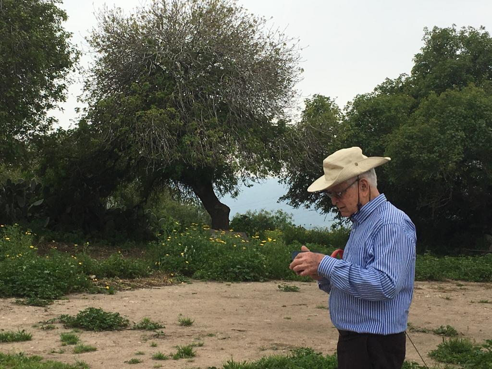
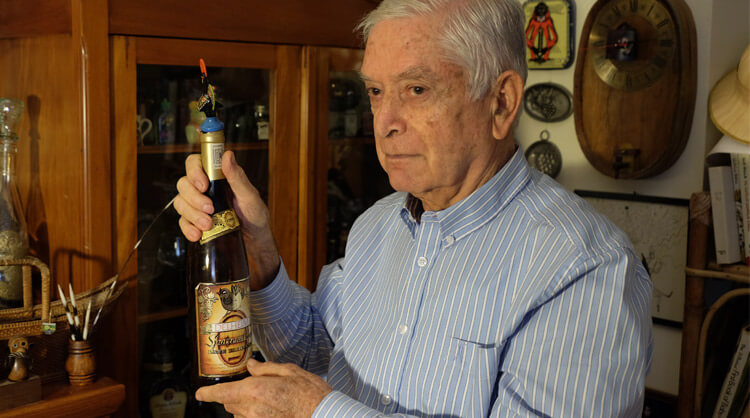
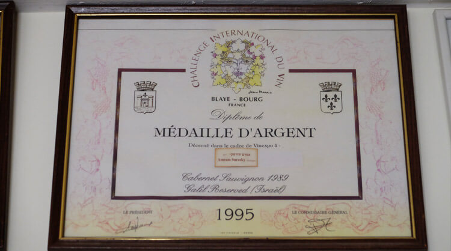

מספר תמונות
בטיול בטבע
בחדר העבודה שלי
מדליה שקיבלתי על יין מצטיין בתחרות בינלאומית
טיול בשוויץ
שירים ומוסיקה שאני אוהב
מתן לייק לאתר
ברקוד לסריקת האתר

שאלות ותשובות
Question number 1:
:3 main differences between web1, web2, web3
| Category | web1 | web2 | web3 |
|---|---|---|---|
| 1. Web target on content creativity | Read Only Web | Read and Write Web | Read, Write and execute web |
| 2. Approximate number of users | Millions of users | Billions of users | Trillions of users |
| 3. New change the version of the web brought | Information sharing | Interaction | Immersion |
:Question number 2
:Web 1.0
.In web 1.0, the user can not rely on the retrive process; he needs to search for the relevant website himself
,In our question, if the user needs websites that talking about "side effects of drugs"
.he is the one that needs to search the url address of websites, and not the search engine
:Web 3.0
.Web 3.0 relys on tagging method to return more efficient data.
Unlike Web 1.0, here we can write the query "side effect of drugs", and the searching engine
.will do the search and will return the relevant websites
יצירת קשר
🙃 🙂 😊